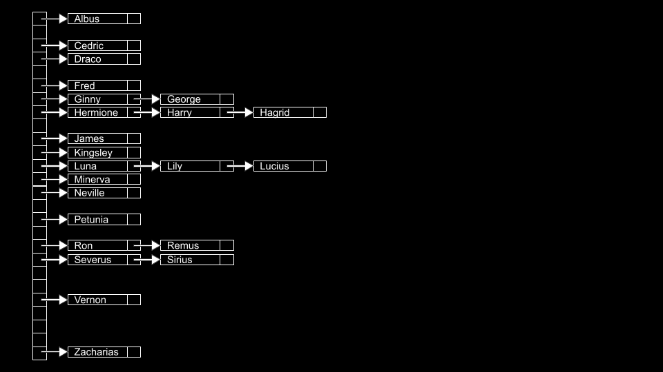

Week 5
Tipos de dados abstratos. Filas. Pilhas. Listas ligadas. Árvores, Árvores de Pesquisa Binária. Tabelas de hash. Tries.
- Shorts
- Lab 5
- Problem Set 5
Notas
- Bem-vindo!
- Estruturas de dados
- Pilhas e filas
- Jack aprende os fatos
- Redimensionamento de arrays
- Listas ligadas
- Árvores
- Dicionários
- Hashing e tabelas de hash
- Tries
- Resumo
Bem-vindo!
- Todas as semanas anteriores apresentaram a você os blocos fundamentais de programação.
- Tudo o que você aprendeu em C permitirá que você implemente esses blocos em linguagens de programação de nível mais alto, como Python.
- Hoje, vamos falar sobre como organizar dados na memória.
Estruturas de dados
- Estruturas de dados são basicamente formas de organização na memória.
- Existem muitas maneiras de organizar dados na memória.
- Estruturas de dados abstratas são aquelas que podemos imaginar conceitualmente. Ao aprender sobre ciência da computação, muitas vezes é útil começar com essas estruturas de dados conceituais. Aprender essas estruturas tornará mais fácil entender como implementar estruturas de dados mais concretas posteriormente.
Pilhas e Filas
- Filas são uma forma de estrutura de dados abstrata.
- Filas têm propriedades específicas. Nomeadamente, são FIFO ou “primeiro a entrar, primeiro a sair”. Você pode imaginar estar numa fila para um brinquedo num parque de diversões. A primeira pessoa na fila é a primeira a andar no brinquedo. A última pessoa é a última.
- As filas têm ações específicas associadas a elas. Por exemplo, um item pode ser enfileirado; isto é, o item pode juntar-se à fila. Além disso, um item pode ser desenfileirado ou sair da fila quando chega à frente da mesma.
- As filas contrastam com uma pilha. Fundamentalmente, as propriedades de uma pilha são diferentes das de uma fila. Especificamente, é LIFO ou “último a entrar, primeiro a sair”. Assim como empilhando bandejas numa cantina, uma bandeja que é colocada por último na pilha é a primeira a ser retirada.
- As pilhas têm ações específicas associadas a elas. Por exemplo, push coloca algo no topo de uma pilha. Pop é remover algo do topo da pilha.
-
No código, você pode imaginar uma pilha da seguinte maneira:
const int CAPACITY = 50; typedef struct { person people[CAPACITY]; int size; } stack;Observe que um array chamado people é do tipo
person. ACAPACITYé a altura máxima que a pilha pode ter. O inteirosizeé o quanto a pilha está realmente cheia, independentemente de quanto ela poderia conter. - Você pode imaginar que o código acima tem uma limitação. Como a capacidade do array é sempre predeterminada neste código, a pilha pode sempre ser maior do que o necessário. Você pode imaginar usar apenas um espaço na pilha em um array de 5000 posições.
- Seria bom se a nossa pilha fosse dinâmica - capaz de crescer à medida que os itens são adicionados a ela.
Jack Aprende os Fatos
- Assistimos a um vídeo chamado Jack Aprende os Fatos da Professora Shannon Duvall da Universidade Elon.
Redimensionando Arrays
- Voltando para a Semana 2, apresentamos a você sua primeira estrutura de dados.
- Um array é um bloco de memória contígua.
-
Você pode imaginar um array da seguinte forma:

-
Na memória, existem outros valores sendo armazenados por outros programas, funções e variáveis. Muitos deles podem ser valores de lixo não utilizados que foram utilizados em algum momento, mas estão disponíveis agora para uso.
-
Imagine que você quisesse armazenar um quarto valor
4em nosso array? O que seria necessário é alocar uma nova área de memória e mover o antigo array para uma nova. -
Valores de lixo antigos seriam sobrescritos com nossos novos dados.

-
Uma das desvantagens dessa abordagem é que ela é um mau design: toda vez que adicionamos um número, temos que copiar o array item por item.
-
Não seria legal se pudéssemos colocar o
4em outro lugar na memória? Por definição, isso não seria mais um array, pois4não estaria mais em memória contígua. -
No seu terminal, digite
code list.ce escreva o código a seguir:// Implements a list of numbers with an array of fixed size #include <stdio.h> int main(void) { // List of size 3 int list[3]; // Initialize list with numbers list[0] = 1; list[1] = 2; list[2] = 3; // Print list for (int i = 0; i < 3; i++) { printf("%i\n", list[i]); } }Observe que o conteúdo acima se parece muito com o que aprendemos anteriormente neste curso. Temos a memória pré-alocada para três itens.
-
Com base em nosso conhecimento mais recente, podemos aproveitar nossa compreensão de ponteiros para criar um design melhor neste código. Modifique seu código da seguinte forma:
// Implements a list of numbers with an array of dynamic size #include <stdio.h> #include <stdlib.h> int main(void) { // List of size 3 int *list = malloc(3 * sizeof(int)); if (list == NULL) { return 1; } // Initialize list of size 3 with numbers list[0] = 1; list[1] = 2; list[2] = 3; // List of size 4 int *tmp = malloc(4 * sizeof(int)); if (tmp == NULL) { free(list); return 1; } // Copy list of size 3 into list of size 4 for (int i = 0; i < 3; i++) { tmp[i] = list[i]; } // Add number to list of size 4 tmp[3] = 4; // Free list of size 3 free(list); // Remember list of size 4 list = tmp; // Print list for (int i = 0; i < 4; i++) { printf("%i\n", list[i]); } // Free list free(list); return 0; }Observe que é criada uma lista de três inteiros. Em seguida, três endereços de memória podem ser atribuídos aos valores
1,2e3. Depois, é criada uma lista de tamanho quatro. Em seguida, a lista é copiada da primeira para a segunda. O valor4é adicionado à listatmp. Como o bloco de memória para o quallistaponta não é mais utilizado, ele é liberado usando o comandofree(list). Por fim, é dito ao compilador para apontar o ponteirolistagora para o bloco de memória para o qualtmpaponta. O conteúdo delisté impresso e, em seguida, liberado. -
É útil pensar em
listetmpcomo dois sinais que apontam para um pedaço de memória. Como no exemplo acima,listem um ponto apontou para um array de tamanho 3. No final,listfoi informado para apontar para um pedaço de memória de tamanho 4. Tecnicamente, no final do código acima,tmpelistapontavam para o mesmo bloco de memória. -
O C vem com uma função muito útil chamada
reallocque irá realocar a memória para você.reallocrecebe dois argumentos. Primeiro, pede que você especifique o array que está tentando copiar. Segundo, pede que você especifique o tamanho para o qual gostaria que o array final fosse. Modifique seu código da seguinte maneira:// Implements a list of numbers with an array of dynamic size using realloc #include <stdio.h> #include <stdlib.h> int main(void) { // List of size 3 int *list = malloc(3 * sizeof(int)); if (list == NULL) { return 1; } // Initialize list of size 3 with numbers list[0] = 1; list[1] = 2; list[2] = 3; // Resize list to be of size 4 int *tmp = realloc(list, 4 * sizeof(int)); if (tmp == NULL) { free(list); return 1; } list = tmp; // Add number to list list[3] = 4; // Print list for (int i = 0; i < 4; i++) { printf("%i\n", list[i]); } // Free list free(list); return 0; }Observe que
int *tmp = realloc(list, 4 * sizeof(int))cria uma lista de quatro inteiros. Em seguida, copia os valores delistpara este novo array. Por fim, um ponteiro chamadotmpaponta para a localização de memória deste novo array. A cópia é realizada porrealloc. Uma vez que essa cópia é feita, a memória na localização delisté liberada. Então, o ponteiro chamadolistaponta para a localização detmp, onde o novo array está localizado. - Você pode imaginar como usar
reallocpara uma fila ou pilha poderia ser útil. Conforme a quantidade de dados cresce,reallocpode ser usado para aumentar ou diminuir a fila ou pilha.
Listas Ligadas
- Nas últimas semanas, você aprendeu sobre três primitivas úteis. Uma
structé um tipo de dados que você pode definir. Um.na notação de ponto permite que você acesse variáveis dentro dessa estrutura. O operador*é usado para declarar um ponteiro ou desreferenciar uma variável. - Hoje, você é apresentado ao operador
->. É uma seta. Este operador vai para um endereço e olha dentro de uma estrutura. - Uma lista ligada é uma das estruturas de dados mais poderosas dentro de C. Uma lista ligada permite que você inclua valores que estão localizados em áreas de memória variáveis. Além disso, elas permitem que você cresça e diminua a lista dinamicamente conforme desejar.
-
Você pode imaginar três valores armazenados em três áreas diferentes de memória da seguinte forma:

- Como poderíamos juntar esses valores em uma lista?
-
Poderíamos imaginar esses dados como segue:

-
Poderíamos utilizar mais memória para acompanhar onde o próximo item está.
Observe que NULL é utilizado para indicar que nada mais está próximo na lista.
-
Por convenção, manteríamos mais um elemento na memória, um ponteiro, que acompanha o primeiro item da lista.

-
Abstraindo os endereços de memória, a lista pareceria o seguinte:

-
Essas caixas são chamadas de nós. Um nó contém tanto um item quanto um ponteiro chamado next. No código, você pode imaginar um nó como segue:
typedef struct node { int number; struct node *next; } node;Observe que o item contido neste nó é um número inteiro chamado de
number. Em segundo lugar, é incluído um ponteiro para um nó chamadonext, que apontará para outro nó em algum lugar na memória. -
Listas ligadas não são armazenadas em um bloco contíguo de memória. Elas podem crescer tanto quanto você desejar, desde que haja recursos suficientes do sistema. No entanto, a desvantagem é que mais memória é necessária para controlar a lista em vez de um array. Isso ocorre porque, para cada elemento, é necessário armazenar não apenas o valor do elemento, mas também um ponteiro para o próximo nó. Além disso, as listas ligadas não podem ser indexadas como é possível em um array, porque precisamos passar pelos primeiros n - 1 elementos para encontrar a localização do n-ésimo elemento. Por causa disso, a lista retratada acima deve ser procurada linearmente. Pesquisa binária, portanto, não é possível em uma lista construída como acima.
-
Conceitualmente, podemos imaginar o processo de criação de uma lista ligada. Primeiro,
node *listé declarado, mas ele é um valor lixo.
-
Em seguida, um nó chamado
né alocado na memória. -
Em seguida, o valor
1é atribuído ao número do nó.
-
Em seguida, o campo
nextdo nó é atribuído comoNULL.
-
Depois,
listé apontado para o local de memória ondenaponta.nelistagora apontam para o mesmo lugar.
-
Um novo nó é então criado. Tanto o campo
numberquanto o camponextsão preenchidos com valores de lixo.
-
O valor
numberdo nó den(o novo nó) é atualizado para2.
-
Além disso, o campo
nexttambém é atualizado.
-
Mais importante, não queremos perder nossa conexão com nenhum desses nós, pois eles podem ser perdidos para sempre. Consequentemente, o campo
nextdené apontado para o mesmo local de memória quelist.
-
Por fim,
listé atualizado para apontar paran. Agora temos uma lista ligada de dois itens.
-
Para implementar isso em código, modifique seu código da seguinte maneira:
// Prepends numbers to a linked list, using while loop to print #include <cs50.h> #include <stdio.h> #include <stdlib.h> typedef struct node { int number; struct node *next; } node; int main(int argc, char *argv[]) { // Memory for numbers node *list = NULL; // For each command-line argument for (int i = 1; i < argc; i++) { // Convert argument to int int number = atoi(argv[i]); // Allocate node for number node *n = malloc(sizeof(node)); if (n == NULL) { return 1; } n->number = number; n->next = NULL; // Prepend node to list n->next = list; list = n; } // Print numbers node *ptr = list; while (ptr != NULL) { printf("%i\n", ptr->number); ptr = ptr->next; } // Free memory ptr = list; while (ptr != NULL) { node *next = ptr->next; free(ptr); ptr = next; } }Observe que o que o usuário digita na linha de comando é colocado no campo
numberde um nó chamadon, e depois esse nó é adicionado àlista. Por exemplo,./list 1 2irá colocar o número1no camponumberde um nó chamadon, então colocará um ponteiro paralistno camponextdo nó, e depois atualizarálistpara apontar paran. Esse mesmo processo é repetido para2. Em seguida,node *ptr = listcria uma variável temporária que aponta para o mesmo local quelistaponta. Owhileimprime o que está no nó apontado porptre, em seguida, atualizaptrpara apontar para o próximo nó na lista. Finalmente, toda a memória é liberada. - Considerando o tempo necessário para pesquisar nesta lista, está na ordem de O(n), pois no pior caso a lista inteira deve sempre ser pesquisada para encontrar um item. A complexidade de tempo para adicionar um novo elemento à lista dependerá de onde esse elemento é adicionado. Isso é ilustrado nos exemplos abaixo.
-
Você, como programador, tem a escolha de como implementar sua lista. O seguinte código, por exemplo, implementa uma lista encadeada que adiciona números no início da lista:
// Prepends numbers to a linked list, using for loop to print #include <cs50.h> #include <stdio.h> #include <stdlib.h> typedef struct node { int number; struct node *next; } node; int main(int argc, char *argv[]) { // Memory for numbers node *list = NULL; // For each command-line argument for (int i = 1; i < argc; i++) { // Convert argument to int int number = atoi(argv[i]); // Allocate node for number node *n = malloc(sizeof(node)); if (n == NULL) { return 1; } n->number = number; n->next = NULL; // Prepend node to list n->next = list; list = n; } // Print numbers for (node *ptr = list; ptr != NULL; ptr = ptr->next) { printf("%i\n", ptr->number); } // Free memory node *ptr = list; while (ptr != NULL) { node *next = ptr->next; free(ptr); ptr = next; } }Observe como os números são colocados no início da lista. Essa inserção será executada na ordem de O(1), pois o número de etapas necessárias para fazer isso não depende do tamanho da lista.
-
Além disso, você pode colocar números no final da lista, como ilustrado neste código:
// Implements a list of numbers using a linked list #include <cs50.h> #include <stdio.h> #include <stdlib.h> typedef struct node { int number; struct node *next; } node; int main(int argc, char *argv[]) { // Memory for numbers node *list = NULL; // For each command-line argument for (int i = 1; i < argc; i++) { // Convert argument to int int number = atoi(argv[i]); // Allocate node for number node *n = malloc(sizeof(node)); if (n == NULL) { return 1; } n->number = number; n->next = NULL; // If list is empty if (list == NULL) { // This node is the whole list list = n; } // If list has numbers already else { // Iterate over nodes in list for (node *ptr = list; ptr != NULL; ptr = ptr->next) { // If at end of list if (ptr->next == NULL) { // Append node ptr->next = n; break; } } } } // Print numbers for (node *ptr = list; ptr != NULL; ptr = ptr->next) { printf("%i\n", ptr->number); } // Free memory node *ptr = list; while (ptr != NULL) { node *next = ptr->next; free(ptr); ptr = next; } }Observe como este código "percorre" a lista para encontrar o fim. Ao adicionar um elemento (adicionando-o no final da lista), nosso código terá uma complexidade de tempo de O(n), pois precisamos percorrer toda a lista antes de poder adicionar o último elemento.
-
Além disso, você pode classificar sua lista à medida que os itens são adicionados:
// Implements a sorted list of numbers using a linked list #include <cs50.h> #include <stdio.h> #include <stdlib.h> typedef struct node { int number; struct node *next; } node; int main(int argc, char *argv[]) { // Memory for numbers node *list = NULL; // For each command-line argument for (int i = 1; i < argc; i++) { // Convert argument to int int number = atoi(argv[i]); // Allocate node for number node *n = malloc(sizeof(node)); if (n == NULL) { return 1; } n->number = number; n->next = NULL; // If list is empty if (list == NULL) { list = n; } // If number belongs at beginning of list else if (n->number < list->number) { n->next = list; list = n; } // If number belongs later in list else { // Iterate over nodes in list for (node *ptr = list; ptr != NULL; ptr = ptr->next) { // If at end of list if (ptr->next == NULL) { // Append node ptr->next = n; break; } // If in middle of list if (n->number < ptr->next->number) { n->next = ptr->next; ptr->next = n; } } } } // Print numbers for (node *ptr = list; ptr != NULL; ptr = ptr->next) { printf("%i\n", ptr->number); } // Free memory node *ptr = list; while (ptr != NULL) { node *next = ptr->next; free(ptr); ptr = next; } }Observe como essa lista é ordenada à medida que é construída. Para inserir um elemento nessa ordem específica, nosso código ainda será executado em O(n) para cada inserção, pois no pior caso teremos que olhar através de todos os elementos atuais.
Árvores
- Árvores de busca binária são outra estrutura de dados que pode ser usada para armazenar dados de forma mais eficiente para que possam ser pesquisados e recuperados.
-
Você pode imaginar uma sequência ordenada de números.
-
Imagine então que o valor central se torna o topo de uma árvore. Aqueles que são menores que esse valor são colocados à esquerda. Os valores que são maiores que esse valor estão à direita.

-
Ponteiros podem então ser usados para apontar para a localização correta de cada área de memória, de modo que cada um desses nós possa ser conectado.

-
No código, isso pode ser implementado da seguinte forma.
// Implements a list of numbers as a binary search tree #include <stdio.h> #include <stdlib.h> // Represents a node typedef struct node { int number; struct node *left; struct node *right; } node; void free_tree(node *root); void print_tree(node *root); int main(void) { // Tree of size 0 node *tree = NULL; // Add number to list node *n = malloc(sizeof(node)); if (n == NULL) { return 1; } n->number = 2; n->left = NULL; n->right = NULL; tree = n; // Add number to list n = malloc(sizeof(node)); if (n == NULL) { free_tree(tree); return 1; } n->number = 1; n->left = NULL; n->right = NULL; tree->left = n; // Add number to list n = malloc(sizeof(node)); if (n == NULL) { free_tree(tree); return 1; } n->number = 3; n->left = NULL; n->right = NULL; tree->right = n; // Print tree print_tree(tree); // Free tree free_tree(tree); return 0; } void free_tree(node *root) { if (root == NULL) { return; } free_tree(root->left); free_tree(root->right); free(root); } void print_tree(node *root) { if (root == NULL) { return; } print_tree(root->left); printf("%i\n", root->number); print_tree(root->right); } -
A busca nesta árvore pode ser implementada da seguinte forma:
bool search(node *tree, int number) { if (tree == NULL) { return false; } else if (number < tree->number) { return search(tree->left, number); } else if (number > tree->number) { return search(tree->right, number); } else if (number == tree->number) { return true; } }Observe que esta função de busca começa indo para a localização da
árvore. Em seguida, usa recursão para buscar pelonúmero. - Uma árvore como a acima oferece dinamismo que um array não oferece. Ela pode crescer e encolher como desejarmos.
Dicionários
- Dicionários são outra estrutura de dados.
- Dicionários, como dicionários em forma de livro que possuem uma palavra e uma definição, possuem uma chave e um valor.
-
O santo graal da complexidade de tempo é O(1) ou tempo constante. Ou seja, o ideal é que o acesso seja instantâneo.

- Dicionários podem oferecer essa velocidade de acesso.
Hashing e Tabelas de Hash
- Hashing é a ideia de tomar um valor e ser capaz de produzir um valor que se torna um atalho para ele mais tarde.
- Por exemplo, o hashing da palavra apple pode produzir um valor de
1, e berry pode ser hashado como2. Portanto, encontrar a palavra apple é tão fácil quanto perguntar ao algoritmo de hash onde a palavra apple está armazenada. Embora não seja ideal em termos de design, colocar todas as palavras com letra a em um recipiente e palavras com letra b em outro, ilustra como você pode usar esse conceito: um valor de hash pode ser usado como atalho para encontrar tal valor. - Uma função de hash é um algoritmo que reduz um valor maior para algo pequeno e previsível. Geralmente, essa função recebe um item que você deseja adicionar à sua tabela de hash e retorna um número inteiro representando o índice do array no qual o item deve ser colocado.
- Uma tabela de hash é uma combinação fantástica de arrays e listas ligadas. Quando implementada em código, uma tabela de hash é um array de ponteiros para nós.
-
Uma tabela hash pode ser imaginada da seguinte forma:
Observe que isso é uma matriz que é atribuída cada valor do alfabeto.
-
Então, em cada localização da matriz, uma lista encadeada é usada para rastrear cada valor que está sendo armazenado lá:

- Colisões ocorrem quando você adiciona valores à tabela hash e algo já existe na localização hash. No exemplo acima, as colisões são simplesmente adicionadas ao final da lista.
-
As colisões podem ser reduzidas ao programar melhor sua tabela hash e algoritmo de hash. Você pode imaginar uma melhoria para o exemplo acima da seguinte forma:
- Como programador, você precisa decidir sobre as vantagens de usar mais memória para ter uma tabela hash grande e, potencialmente, reduzir o tempo de busca ou usar menos memória e potencialmente aumentar o tempo de busca.
Tries
- Tries são outra forma de estrutura de dados.
- Tries são sempre pesquisáveis em tempo constante.
- Uma desvantagem dos Tries é que eles tendem a ocupar uma grande quantidade de memória. Note que precisamos de 26 * 5 = 130
nósapenas para armazenar Hagrid! -
Hagrid seria armazenado da seguinte forma:
-
Harry então seria armazenado da seguinte forma:

Resumindo
Nesta lição, você aprendeu sobre o uso de ponteiros para construir novas estruturas de dados. Especificamente, mergulhamos em...
- Estruturas de dados
- Pilhas e filas
- Arrays redimensionáveis
- Listas ligadas
- Dicionários
- Tries
Até a próxima!